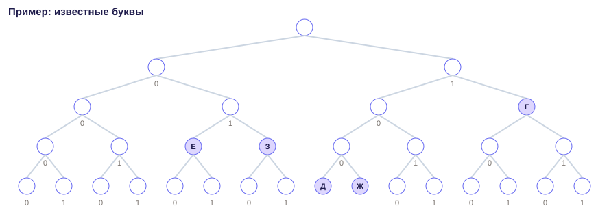
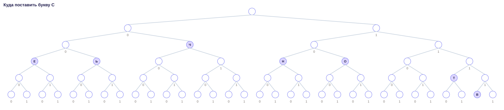
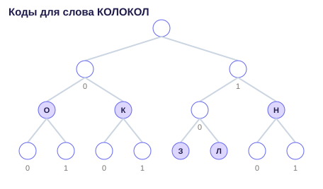
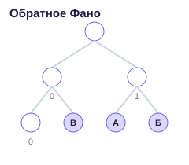

По каналу передают буквы. У каждой своё кодовое слово из нулей и единиц. Код должен подчиняться условию Фано: ни одно слово не является началом другого. Тогда сообщение читается однозначно, слева направо.
Удобно рисовать дерево. От корня шаг влево — это 0, шаг вправо — это 1. Буква стоит только на листе: из этой точки больше никуда не идём.
Часть кодов уже дана. Оставшиеся буквы надо посадить в свободные места так, чтобы сумма длин новых кодов была самой маленькой.
Известны пять кодов. Нужны ещё три буквы, сумма длин минимальная.
11. От корня: вправо → вправо. Этот лист закрыт, ниже него букв больше нет.1000. От корня: вправо → влево → влево → влево. Этот лист закрыт, ниже него букв больше нет.010. От корня: влево → вправо → влево. Этот лист закрыт, ниже него букв больше нет.1001. От корня: вправо → влево → влево → вправо. Этот лист закрыт, ниже него букв больше нет.011. От корня: влево → вправо → вправо. Этот лист закрыт, ниже него букв больше нет.
Короткие свободные коды для трёх новых букв: 000, 001, 101. Длины 3 + 3 + 3 = 9. Глубже спускаться не нужно: более длинный набор даст большую сумму.
Частая ошибка: посадить все новые буквы на одной глубине, хотя два коротких кода и один чуть длиннее дают меньшую сумму.
Нажмите «В интерпретатор» под кодом. Список known и число need можно заменить на свои из условия.
def conflicts(a, b):
# Одно слово — начало другого. Так условие Фано ломается.
return a.startswith(b) or b.startswith(a)
known = ['11', '1000', '010', '1001', '011'] # МЕНЯТЬ: уже занятые коды
need = 3 # МЕНЯТЬ: сколько новых букв
limit = 5
free = []
for length in range(1, limit + 1):
for i in range(2 ** length):
code = f"{i:0{length}b}"
if all(not conflicts(code, old) for old in known):
free.append(code)
best = None
from itertools import combinations
for group in combinations(free, need):
bad = False
for i, left in enumerate(group):
for right in group[i + 1:]:
if conflicts(left, right):
bad = True
if bad:
continue
score = sum(len(code) for code in group)
if best is None or score < best:
best = score
print(best)В этом приёме неизвестна одна буква. Нужен самый короткий код, который не начинается с чужого и сам не является началом чужого.
Если таких коротких кодов несколько, в условии написано, какой взять: с наибольшим или с наименьшим числом. Число считают как обычное двоичное: 110 это 6, 100 это 4. Не угадывайте правило, прочитайте последнюю фразу условия.
Нужен код буквы С. Если кодов одной длины несколько, берём наибольшее число.
11110, путь: вправо → вправо → вправо → вправо → влево.000, путь: влево → влево → влево.01, путь: влево → вправо.100, путь: вправо → влево → влево.101, путь: вправо → влево → вправо.1110, путь: вправо → вправо → вправо → влево.001, путь: влево → влево → вправо.
Самое короткое свободное место — 110. Это и есть ответ.
Не берите код длиннее, если на дереве уже есть свободный лист выше. И не ставьте букву на ветку, которая ведёт к уже занятой букве: тогда одно слово станет началом другого.
Нажмите «В интерпретатор» под кодом. Список known и число need можно заменить на свои из условия.
def conflicts(a, b):
return a.startswith(b) or b.startswith(a)
known = ['11110', '000', '01', '100', '101', '1110', '001'] # МЕНЯТЬ
chosen = None
for length in range(1, 8):
level = []
for i in range(2 ** length):
code = f"{i:0{length}b}"
if all(not conflicts(code, old) for old in known):
level.append(code)
if level:
# Несколько кодов одной длины: берём наибольшее число.
chosen = max(level, key=lambda code: int(code, 2))
break
print(chosen)Просят не сумму длин алфавита, а длину одного слова. Частая буква должна получить короткий код: она встретится много раз, и каждый лишний знак повторится.
Сначала закрывают известные коды. Потом свободные места раздают: самый короткий код — самой частой ещё не закодированной букве, следующий — следующей по частоте.
Уже известны: Н = 11, З = 100.

| буква | сколько раз в слове | код |
|---|---|---|
| О | 3 | 00 |
| К | 2 | 01 |
| Л | 2 | 101 |
Длина закодированного слова: каждая буква добавляет длину своего кода столько раз, сколько она встретилась. Получается 16.
Если отдать короткий код редкой букве, а частую усадить глубоко, сумма станет больше. Это уже не минимум.
Нажмите «В интерпретатор» под кодом. Список known и число need можно заменить на свои из условия.
word = 'КОЛОКОЛ'
codes = {'Н': '11', 'З': '100', 'О': '00', 'К': '01', 'Л': '101'} # МЕНЯТЬ: коды, которые выбрали по дереву
total = 0
for ch in word:
total += len(codes[ch])
print(total)Иногда в условии сказано: ни одно кодовое слово не является окончанием другого. Сообщение тогда однозначно читается с конца, а не с начала.
Дерево строят так же, но путь читают с последнего знака. Проще перевернуть каждый известный код задом наперёд, решить как обычное Фано и перевернуть ответ обратно.
10. Конец этого слова — «0», целиком окончание нельзя занимать.11. Конец этого слова — «1», целиком окончание нельзя занимать.01. Конец этого слова — «1», целиком окончание нельзя занимать.
Самый короткий новый код, который не является окончанием чужого и сам не оканчивается чужим: 00. Если таких несколько, в этом примере берём наибольшее число.
Прямое дерево здесь обманывает: место, свободное слева направо, может быть занято, если смотреть с конца.
Нажмите «В интерпретатор» под кодом. Список known и число need можно заменить на свои из условия.
def conflicts(a, b):
return a.startswith(b) or b.startswith(a)
known = ['10', '11', '01'] # МЕНЯТЬ: коды как в условии
rev = [code[::-1] for code in known]
chosen = None
for length in range(1, 8):
level = []
for i in range(2 ** length):
code = f"{i:0{length}b}"
if all(not conflicts(code, old) for old in rev):
level.append(code)
if level:
chosen = max(level, key=lambda code: int(code[::-1], 2))
break
# Печатаем код в обычном порядке, не перевёрнутый.
print(chosen[::-1])